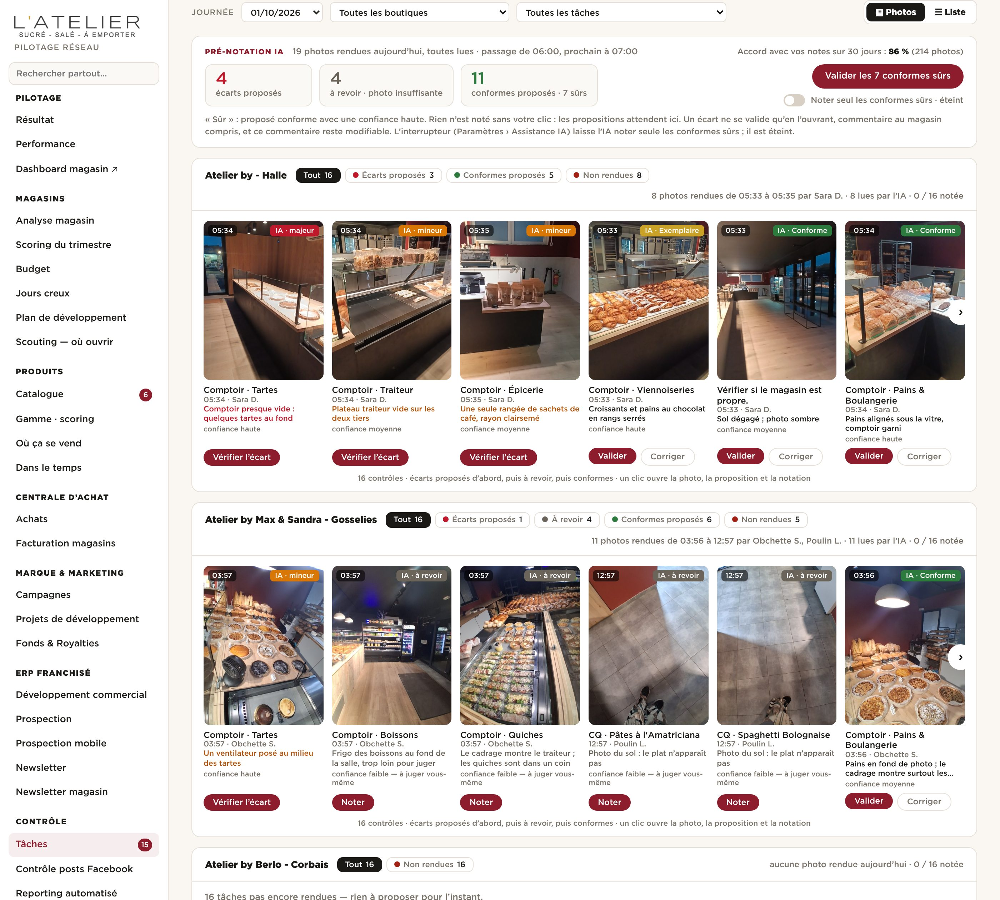
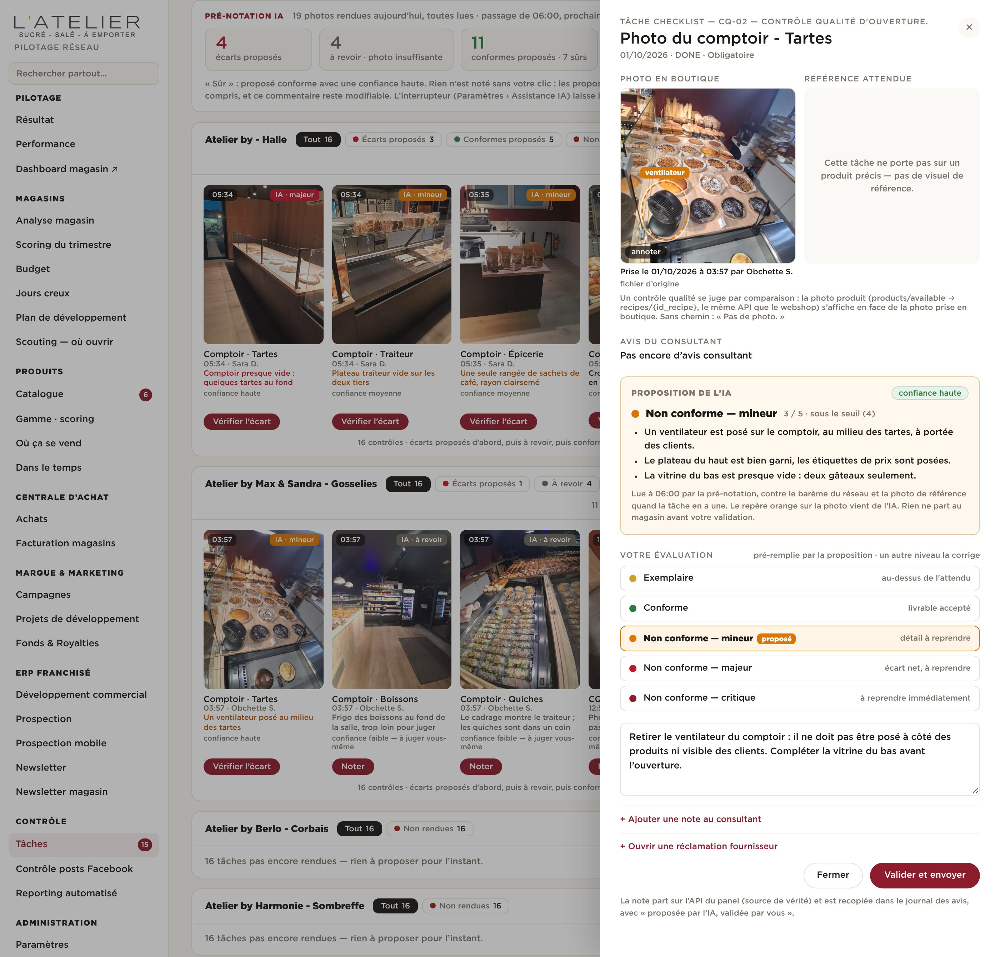

Cockpit · Tâches › Contrôle · maquette · photos réelles du 01/10/2026, propositions rédigées pour la maquetteContrôle qualité : l’IA pré-note, le consultant valide
Même page Tâches › Contrôle, en carrousels. Chaque matin, l’IA a déjà lu toutes les photos rendues : chaque carte porte sa proposition (niveau du barème, confiance, premier constat), les boutiques qui ont des écarts passent devant, et une bande résume le passage. Les conformes à confiance haute se valident en un clic ; les écarts et les photos à revoir s’ouvrent un par un, la proposition pré-remplissant le niveau et le commentaire. Rien ne part au panel sans le geste du consultant. Tâches et photos réelles du jeudi 1er octobre (Gosselies 11, Halle 8) ; les propositions sont rédigées pour la maquette et le taux d’accord est un exemple.

La page : la bande de pré-notation, puis les boutiques, écarts proposés en tête

Un écart ouvert : la proposition, le repère sur la photo, le niveau et le commentaire pré-remplis
Ce que ça apporte
- Le consultant commence par les 4 écarts et les 4 photos à revoir, pas par 19 photos à ouvrir
- Les conformes sûrs (confiance haute) se valident par lot : 7 clics de moins ce matin-là
- La proposition reste dans le barème du réseau (5 niveaux, seuil 4) : comparable aux notes des consultants
- Les photos inexploitables (le sol, un frigo trop loin) sont repérées le jour même : on peut demander de refaire la photo
- Le taux d’accord avec vos notes dit quand on peut lui faire confiance, et quand allumer l’option « noter seul »
Limites
- Sans photo de référence ni critère par tâche, l’IA juge sur une idée générale de la vitrine
- Un appel par photo : la proposition est gardée en base pour ne jamais payer deux fois
- Le magasin peut contester : le journal doit dire qui a proposé et qui a validé
À construire
- Une tâche planifiée toutes les heures : les photos « à contrôler » passent par la notation existante (src/anthropic.php)
- Une table pil_cq_ia : niveau, confiance, constats, commentaire, repère, modèle
- Demander au modèle la zone de l’écart (le repère) en plus des constats
- Les pastilles, la bande et « Valider les conformes sûrs » dans Tâches › Contrôle
- La mesure de l’accord IA / consultants sur l’historique (mac_task_review)